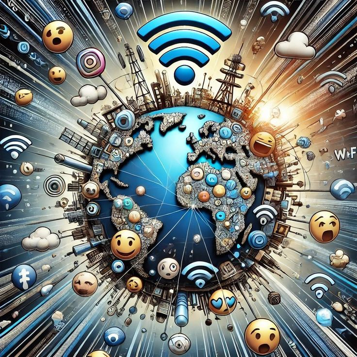

- A system of interconnected webpages and information that aims to give universal access to a alrge array of documents.

Fig 2 - A conceptual visualisation of the World Wide Web
How it works:
The steps are:
Creation of Content - Web developers create webpages using HTML, CSS and JavaScript and upload them to a web server.
Hosting - The webpage is stored on a web server which is always connected to the internet and ready to serve pages to anyone who requests them.
Hyperlinking - Pages on the WWW are connected to each other through hyperlinks allowing users to navigate from one page to another anywhere in the world.
Accessing Information - Users access web pages by entering a URL into their browser which retrieves and displays the requested page from the web server.
Sharing Information - The WWW allows information to be shared globally in the form of text, images, videos and documents making knowledge accessible to anyone with an internet connection.
Its Relation to Computer and IT:
Foundation of Modern Computing Infrastructure - The web runs on a client-server model.
Core technologies rooted in IT - URLs rely on DNS to map addresses to IP, HTTP is a networking protocol governing data exchange and HTML is used in software development.
Data Transmission on Network - the web depends on IT networking hardware to deliver texts, images and video globally.
Scale and IT management - The web requires massive IT infrastructure including data centers, cloud platforms, cybersecurity and content delivery networks ll managed by IT professionals.